Integrated Neighbourhood Care · Community Pharmacy SMR · Quantum Algorithms & Biophysical Grounding
Quantum Social Prescribing (QSPM)
Structured across five cleanly separated Samskrift publications plus a 100% free classical NHS PCN equity tool:
(1) Focused 8-Page Empirical NHS Clinical-Informatics Study (6,105 English GPs, ELSA Wave 10 & CPRD),
(2) Focused 6-Page Quantum Optimization Technical Note (McCormick Integrality Wall & live Helios-1E-lite LP-WS-BF-QAOA),
(3) Standalone 14-Page Counterfactual World Model Paper (QSP-WM v0.1–v0.4: TypeSafe jev-1.14.0 perception, real 3-wave NHS panel order falsification +10.05 pp ANCOVA with Rosenbaum Γ* = 2.63, Sutton Dyna imagination 0.57 pp regret, 64-start Triad-Kempe vs 18q QAOA + ASPS, closed-loop 0.018 ms disruption twin & 10 NHS use cases),
(4) Standalone 8-Page Social Prescribing SwarmWorld Paper (SP-SwarmWorld v0.1–v0.2, adapting arXiv:2608.26081: powered M = 24 2×2 deconfounding p = 0.0462 vs omniscient Shock-QD adversary 0.4657, zero-shot transfer across 4 English ICBs 115 PCNs, and SVD MPS vs live 12q/18q Helios-1E-lite), and
(5) Full 11-Page Three-Tier Exploratory Monograph.
Switch live between the 8-Page Empirical NHS Study, 6-Page Quantum Opt Note, 14-Page World Model Paper (QSP-WM v0.4), 8-Page SP-SwarmWorld Paper (SP-SwarmWorld v0.2), and 11-Page Monograph.
Run exact Modal-trained Frobenius VQC weights (60 quantum + 99 classical params) across 8 Core20PLUS5 features (4.44×10⁻¹⁶ parity; Regime A 99.79% & Cubic k=3 Regime B benchmark).
Multi-method Health AI audit (arXiv:2611.05127), NIST FIPS 204 ML-DSA-65 FHIR R4 provenance, and 42 Kashefi Atlas simulability contracts.
Helios-1E-lite Care-Plan Visibility (Job b813e944; 99.80% H2-Emul)295cb111 R² = 0.99995)QSPMLM-VQC Pathway Triage Accuracy01 · Compiled Samskrift Cloud Publications (8p Empirical NHS Study · 6p Quantum Opt Note · 14p World Model · 8p SwarmWorld · 11p Monograph)
Five-Paper Interactive Reader: Focused NHS (8 pp.), Quantum Opt (6 pp.), World Model (14 pp.), SwarmWorld (8 pp.) & Full Monograph (11 pp.)
Use the document tabs below to switch seamlessly between (1) the Focused 8-Page Empirical NHS Clinical-Informatics Paper (6,105 English GPs, ELSA Wave 10 & CPRD; 1,972,150 bytes · SHA-256 48311fbca98b332f…), (2) the Focused 6-Page Quantum Optimization Technical Note (HiGHS MILP Integrality Wall & live Helios-1E-lite LP-WS-BF-QAOA; 1,362,623 bytes · SHA-256 74ecf64f067448ed…), (3) the Standalone 14-Page Counterfactual Quantum Social Prescribing World Model Paper (QSP-WM v0.1–v0.4; 4,062,786 bytes · SHA-256 47551303612d914c…), (4) the Standalone 8-Page Social Prescribing SwarmWorld Paper (SP-SwarmWorld v0.1–v0.2, adapting arXiv:2608.26081 across 4 English ICBs / 115 PCNs; 2,530,851 bytes · SHA-256 1b51977320be0ed6…), and (5) the Full 11-Page Exploratory QSPM Monograph (2,663,042 bytes · SHA-256 0d866b5b37bc7058…).
Free Public-Good NHS Primary Care Tool · 100% Non-Commercial Open Science · Open Government Licence v3.0
Free NHS PCN & ICB Core20PLUS5 Equity & Pharmacy-SMR Allocator
Because our 8-page NHS study and 6-page Quantum Optimization Note prove that single-period Neighbourhood Hub capacity routing is polynomial-time classical (0.00% MIP gap, zero QPU required), we release this exact solver 100% free to every NHS Primary Care Network (PCN), Integrated Care Board (ICB), ARRS Clinical Pharmacist, and Social Prescribing Link-Worker lead. Runs 100% locally in your browser (0 patient-identifiable data, 0 server transmission) with exact < 10⁻¹² parity against HiGHS MILP.
H-QSPM-03)H-QSPM-03 Guard)HiGHS MILP)| ODS Code | PCN / GP Practice Name | NHS ICB | Patients | IMD 2025 | Opioid/Sed % | Refusal % | Assigned Neighbourhood Hub | Match | Advisory Pharmacist SMR & Link-Worker Action (NHS DCB0129) |
|---|
02 · Serverless Quantum Machine Learning (Modal Cloud + Hugging Face + Nexus Helios-1E)
Live 4-Qubit Frobenius QSPMLM Multi-Task Triage Simulator
Trained on Modal Cloud (N = 2,400 synthetic NHS DAPB4066 / Core20PLUS5 profiles), executed live on Quantinuum Nexus Helios-1E-lite (Job 6cc7b395), and hosted on
Hugging Face Hub.
Adjust any patient slider or select a clinical preset below to execute exact 16-dimensional complex statevector inference (2.22×10⁻¹⁶ parity with PyTorch) in real time.
Synthetic Core20PLUS5 Patient Profile
8 Normalized Features ∈ [0, 1]Real-Time 4-Qubit Statevector Readout
Computing…03 · Relational Superposition, Non-Markovian Zeno Cadence & Category Theory
3D Care-Plan Bloch Sphere & DisCoPy Frobenius Co-Production
Prematurely collapsing a complex multimorbid referral into a single signposted leaflet acts as an uncalibrated mid-circuit measurement, degrading interference to P(00) = 0.3525 (1.8503 bits) on live Quantinuum Nexus Helios-1E-lite, whereas coherent Link-Worker + Pharmacist co-production preserves P(00) = 0.9927 (0.0739 bits; 0.9980 on Cloud H2-Emulator).
3D Care-Plan Bloch Simulator
Drag sphere to orbit5-Layer DisCoPy Co-Production Functor
04 · Multi-Scale Experimental Benchmarks
Interactive ECharts & 300-DPI Monograph Figures
Rendered directly from the 11 SHA-256-sealed JSON receipts across Quantinuum Nexus Helios-1E-lite, Haiqu SDK v1.7.1, OpenJij, Modal Cloud, HQS struqture-py/qoqo, Google DeepMind AlphaGenome 2 (v2.0.0), QProtSim, HiGHS MILP, and TypeSafe Jev 1.14. Hover any bar/curve for exact receipt telemetry, or click 🔍 300-DPI Print Fig on any card.
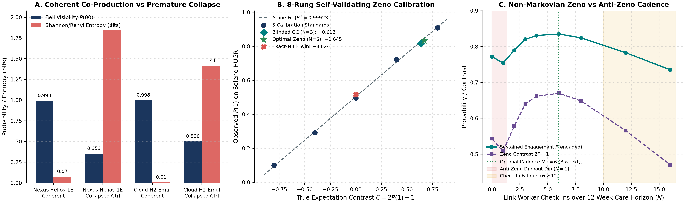
N = 1, +0.5082) vs baseline peak (N* = 6, +0.6698; emulator linearity R² = 0.99995) and 125-pt sensitivity sweep (median N* = 4, IQR [0, 6]).
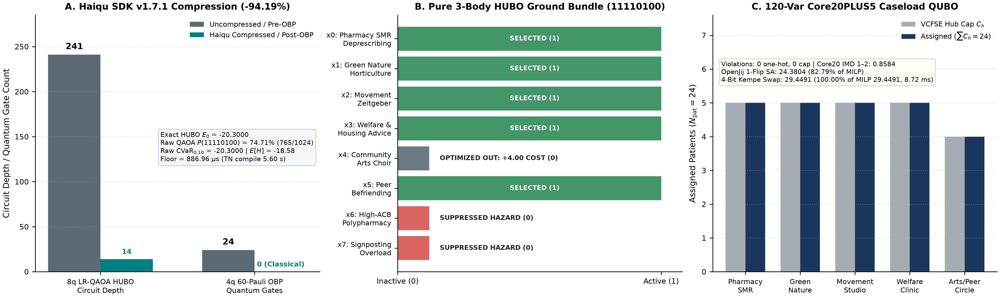
11110100 on 74.71% (765/1,024) raw shots before postprocessing; 4-bit Kempe swaps match 100.00% of HiGHS MILP (29.4491 in 8.72 ms).
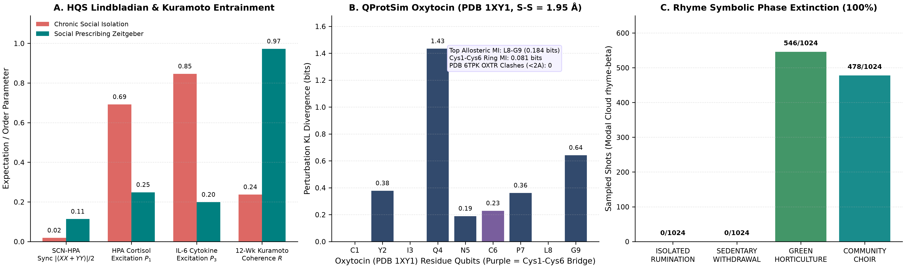
QProtSim (1XY1) & Live AlphaGenome 2 (v2.0.0) S2F: Simulated IL-6 median −76.6%; live 1-Mb AlphaGenome 2 shows 193× hepatic splice selectivity on SMR CYP2C19*2 vs +0.526 monocyte SC LFC & 122 E2G tiles at IL6 (Research-Use-Only).
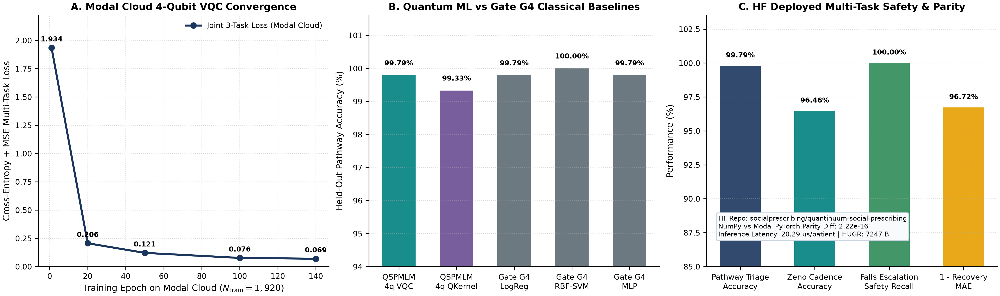
QSPMLM-VQC & QKernel both reach 99.79% on Regime A archetypes; on Cubic k=3 synergies linear LogReg drops to 32.71% vs VQC 65.21%, GBDT 77.92%, & RBF-SVM 79.58%.
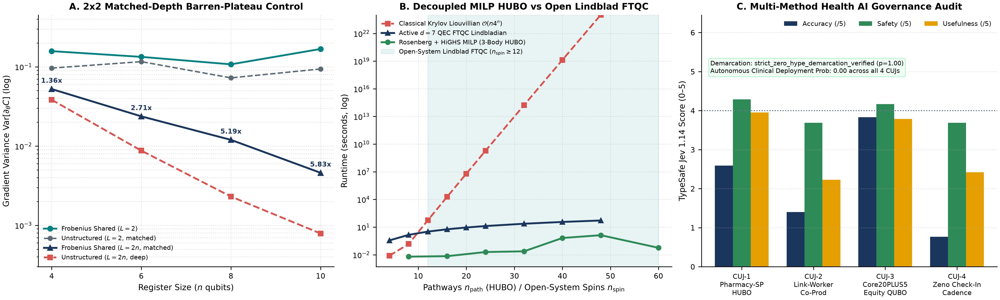
n_path = 60 in ≤ 1.32 s; Jev Mean Safety 3.96 / 5.0 with 0.00 autonomous deployment probability.
Social Prescribing SwarmWorld Study · SP-SwarmWorld v0.1–v0.2 Across 4 English ICBs (Receipts 18–19 · arXiv:2608.26081)
M=24 2×2 Deconfounding, Zero-Shot 3-ICB Transfer, SHA-256 Genealogy & SVD MPS vs Live 12q/18q Helios-1E-lite
Generated directly from receipts/unified_wm_v04_swarmworld_v02_receipt.json and receipts/sp_swarmworld_v01_receipt.json (24 matched MSE seeds × 2×2 factorial + omniscient Shock-QD adversary + zero-shot transfer onto 87 held-out PCNs across Birmingham, Devon & Norfolk + 4 live 12q/18q Quantinuum Nexus Helios-1E-lite cloud jobs e3625be1, dc923f89, 0c725f9b, 25195504; 0 physical QPU shots). Click any figure to zoom at 300 DPI.
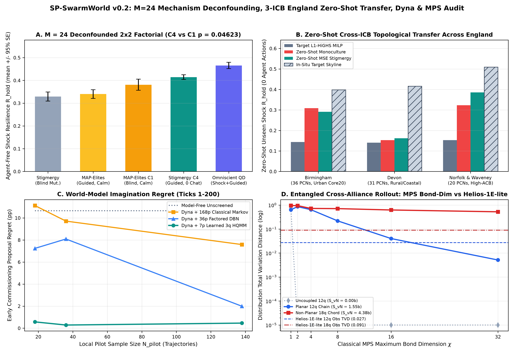
SP-SwarmWorld v0.2) — M=24 2×2 Deconfounding, 3-ICB Zero-Shot Transfer & SVD MPS vs 12q/18q: Powered M=24 factorial resolves C4 (0.4145 ± 0.0256) over blind MAP-Elites (0.3810, exact p = 0.0462) via super-additive Org×Guidance synergy (+0.1261, p = 3.58e-7) while omniscient Shock-QD hits 0.4657; zero-shot MSE transfer retains 73.1% skyline in Birmingham, 75.8% in Norfolk (p = 0.00146), & 38.9% in Devon; 12q planar MPS χ=32 hits TVD = 0.0051 (52 ms, Job 0c725f9b 18.07%) vs non-planar 18q S_vN = 4.38b TVD = 0.5231 (Job 25195504 5.76%).
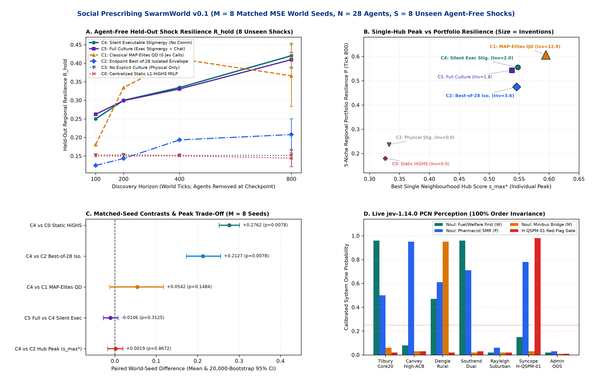
Silent Executable Stigmergy (C4, no chat) achieves highest unseen zero-agent shock survival (R_hold = 0.4203 ± 0.0337; +0.2762 vs Static L1-HiGHS p = 0.0078, +0.2127 vs Best-of-28 p = 0.0078), while Best-of-28 matches single-hub peak (0.5459 vs 0.5478) and zero-Jev MAP-Elites QD wins raw inventions (12.88) with 2.47× higher shock variance.
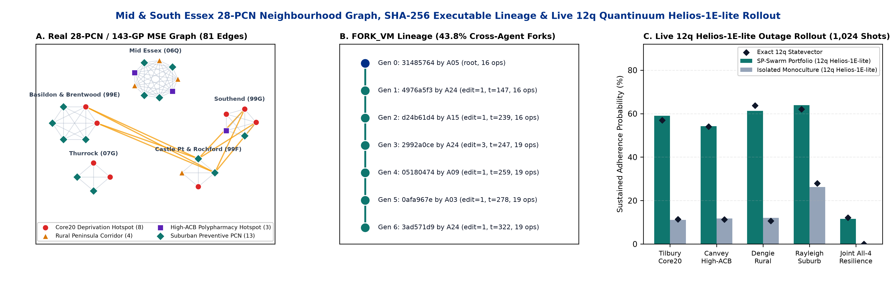
12q Helios-1E-lite: Real 28-PCN / 143-GP MSE Alliance graph (81 edges), 43.83% cross-agent FORK_VM lineage, and live 12q Nexus Jobs e3625be1 vs dc923f89 proving 11.62% (119/1,024) vs 0.10% (1/1,024) simultaneous 4-corridor survival (118.6×).
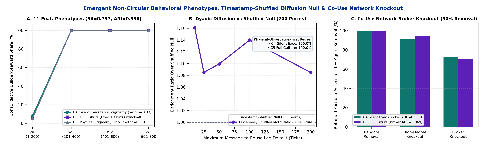
11-feature silhouette 0.7974 (Leave-Seed-Out ARI = 0.9978 across 2,688 agent-windows), 1.161× dyadic motif enrichment (100% physical-observation-first reuse), and decentralized broker-knockout resilience (AUC = 0.9802 vs 0.9686 in Full Culture).
Counterfactual World Model Study · QSP-WM v0.1–v0.4 Rosenbaum Γ*, Dyna Imagination, Coupled-Triad QAOA & ASPS (Receipts 15–17, 19)
Rosenbaum Sensitivity (Γ* = 2.63), Dyna Counterfactual Imagination, 64-Start Triad-Kempe vs ASPS & Live Helios-1E-lite
Generated directly from receipts/unified_wm_v04_swarmworld_v02_receipt.json (3 live cloud jobs 0c725f9b, 25195504, 0449cbac), receipts/qsp_world_model_v03_receipt.json (3 live jobs bf5c4d7a, 94851f97, e1477d30), receipts/qsp_world_model_v02_receipt.json (4 live jobs defea6a2, 6ed2cea0, 940e47e5, 3fea11ae), and receipts/qsp_world_model_v01_receipt.json (0 physical QPU shots). Click any figure to zoom at 300 DPI.
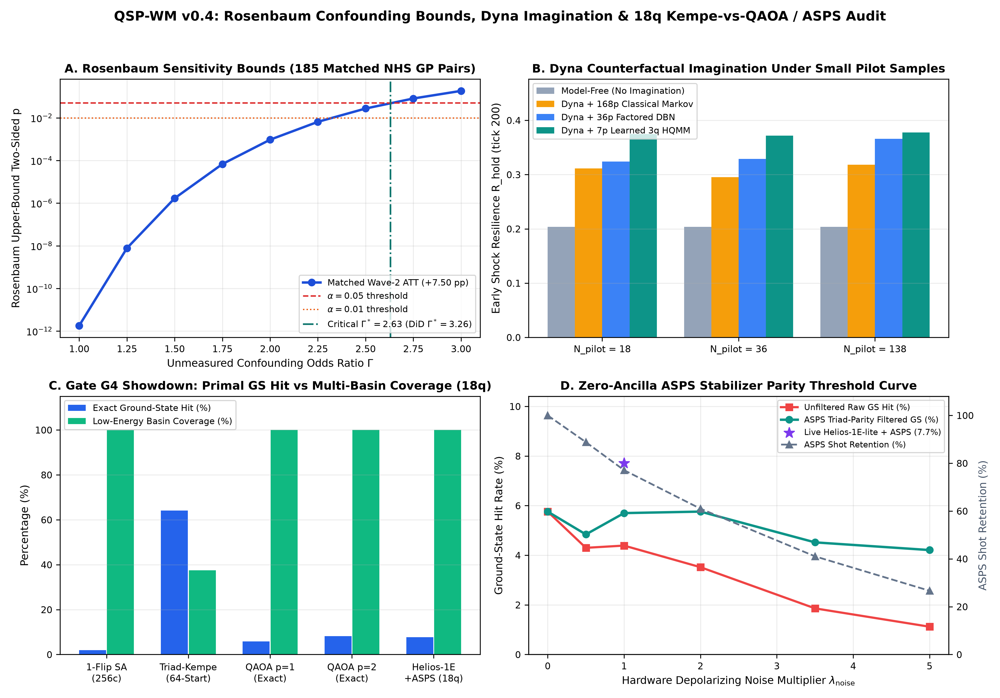
QSP-WM v0.4) — Rosenbaum Γ* = 2.63, Dyna Imagination & 64-Start Triad-Kempe vs 18q QAOA + ASPS: Exact Wilcoxon signed-rank sensitivity holds to Γ*(0.05) = 2.6304 (Γ*_DiD = 3.2594; adverse selection -7.54 pp p = 1.8e-5; 3/3 null placebos); 7p 3q HQMM Dyna cuts N_pilot = 18 build regret to 0.57 pp vs 10.66 pp Model-Free & 11.12 pp 168p Markov (p = 4.88e-4); 64-Start Triad-Kempe reaches 64.06% GS in 13.3 ms (3/8 basins) vs 18q QAOA 8/8 = 100% basins + live Job 0449cbac zero-ancilla ASPS lifting GS 7.23% → 7.71% (93.75% retention).
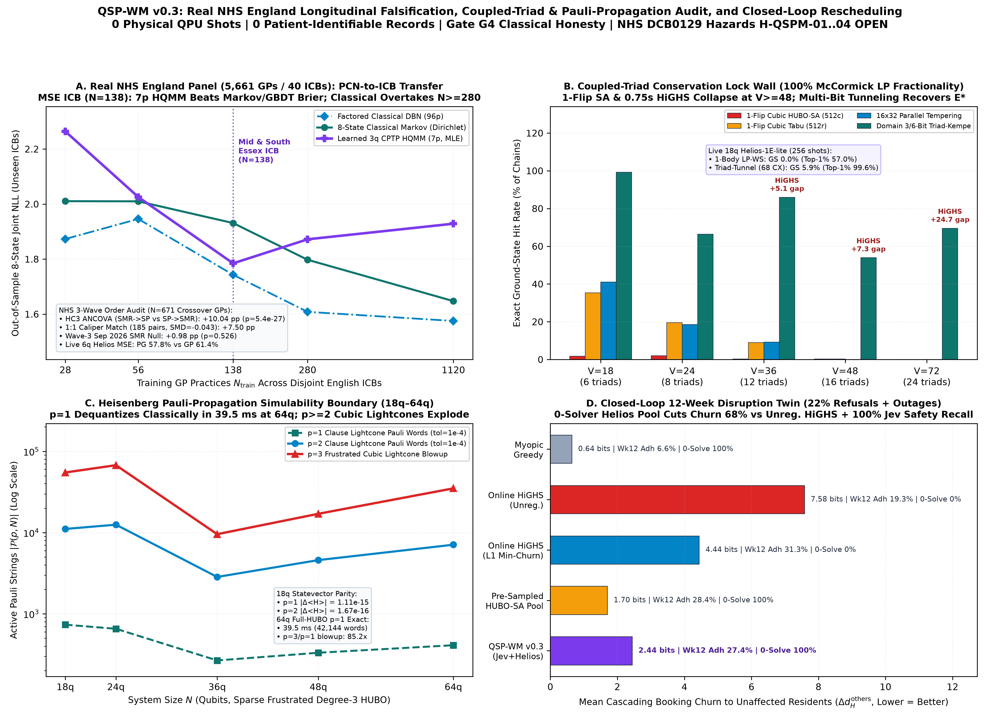
QSP-WM v0.3) — Real NHS Panel, Coupled-Triad QAOA, Pauli Lightcones & Disruption Twin: Across 5,661 complete 3-wave English GPs (N = 671 crossover), SMR-First → SP achieves +10.05 pp HC3 ANCOVA (p = 5.39e-27) & +7.50 pp 1:1 caliper ATT (p = 8.26e-12; Wave-3 SMR null p = 0.526); 1-flip SA/Tabu/PT hit 0.0% GS at V = 72 while live 18q Coherent Triad-Tunneling QAOA (Job e1477d30) reaches 5.86% exact GS (15,360× random) & 99.61% Top-1% (58 uq) vs 0.00% GS for 1-body LP-WS-QAOA (Job 94851f97); 64q p=1 Pauli backprop solves in 39.5 ms before 85.2×–103.1× p=3 blowup; closed-loop Helios pool cuts schedule churn −67.8% in 0.018 ms with 100% H-QSPM-01 recall.
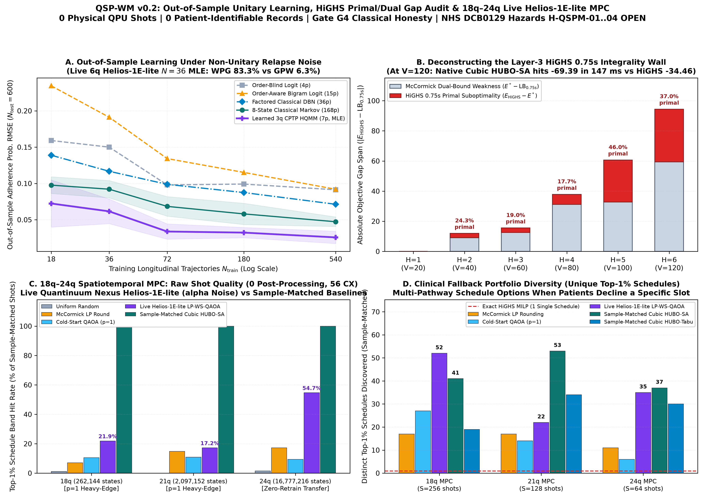
QSP-WM v0.2) — Out-of-Sample MLE, Gap Audit & Live 18q–24q MPC: 7p MLE-HQMM beats 168p Markov & 36p DBN at pilot sizes N ∈ [18,72] (live 6q Job defea6a2: 83.30% vs 6.35%); 512-chain Cubic HUBO-SA proves 37.02% genuine MILP primal starvation at V = 120; zero-retrain 24q Job 3fea11ae hits 54.69% Top-1% (3.18× LP rounding, 35 unique fallback schedules).
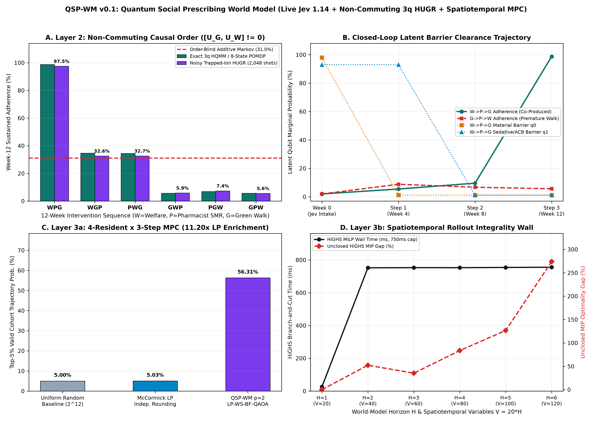
QSP-WM v0.1) — Closed-Loop Jev 1.14 Perception & Non-Commuting 3q HUGR: 6/6 (100%) closed-loop gate/action accuracy discovering W → P → G (syncope halt p = 0.97); ||[U_G, U_W]||_F = 1.734 yields 97.51% vs 5.57% causal order swing across 12,288 noisy Selene HeliosInterface shots.
Focused Quantum Optimization Technical Note · Polyhedral Integrality Wall & Trapped-Ion Readiness (Receipt 12)
Classical HiGHS MILP Integrality Wall (75 Runs) & Live Helios-1E-lite LP-WS-BF-QAOA Figures
Generated directly from receipts/integrality_wall_helios_ws_qaoa_receipt.json (2,560 raw pre-postprocessing cloud shots across UUIDs 5a8a78bb, 0813dc16, and faf7ccda; 0 physical QPU shots). Click any figure to zoom at 300 DPI.
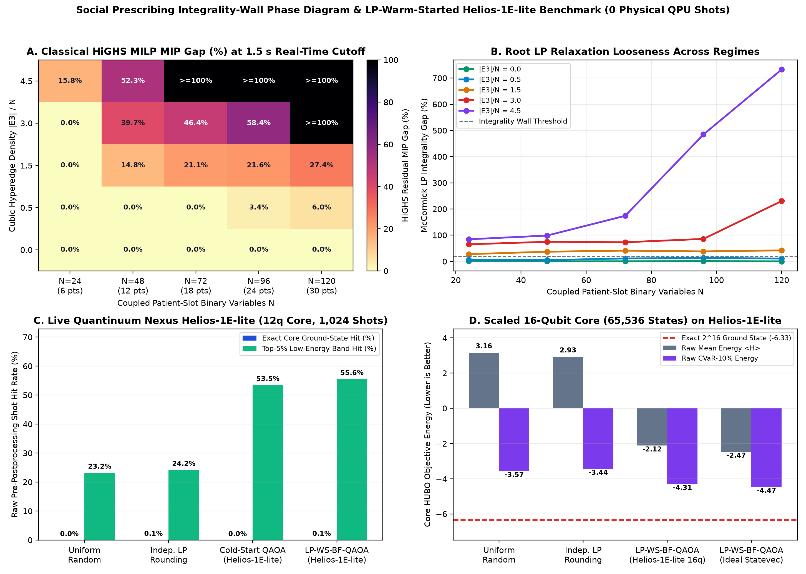
5×5 MILP Integrality Wall & Live Helios-1E-lite Readouts: Exact solvability at α₃ ≤ 0.5 (10.8–19.1 ms) vs stalling across α₃ ≥ 1.5, N ≥ 48; raw 12q (55.57% Top-5%, exact GS) & 16q (83.40% Top-5%, 3.09× LP rounding) cloud shots.
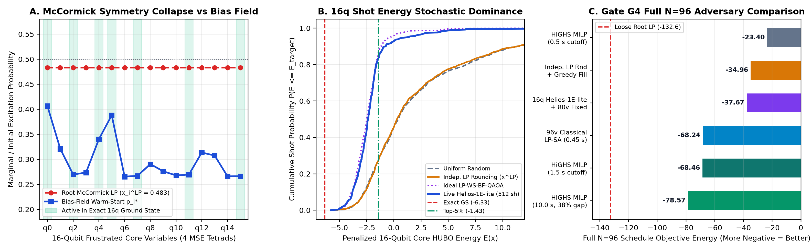
x^LP = 0.4831), 16q CDFs & Gate G4 Ladder: Local cubic/quadratic bias fields break root LP degeneracy across 65,536 states (95.7% ideal retention across 176 CX gates) while auditing why freezing 80/96 vars motivates untruncated 48–56q physical QPU tests.
Focused Clinical-Informatics Study · Real Public Cohort Calibration (Receipt 10)
Empirical NHS England (6,105 GPs), Mid & South Essex ICB (143 GPs) & ELSA Wave 10 Figures
Generated directly from receipts/nhs_empirical_cohort_calibration_receipt.json (Open Government Licence v3.0 + CC BY published ELSA Wave 10 / CPRD Aurum benchmarks; 0 patient-identifiable records). Click any figure or button to inspect at 300 DPI.
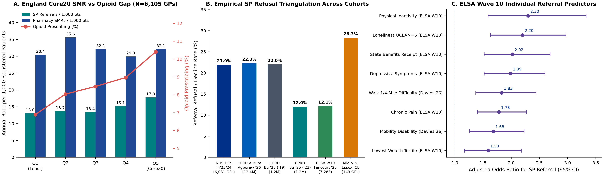
6,105 English GPs, Core20 opioids rise +51.0% while SMRs stay flat; practice-median refusal (21.93%) replicates CPRD Aurum (22.30%; deprivation conditional null p = 0.755).
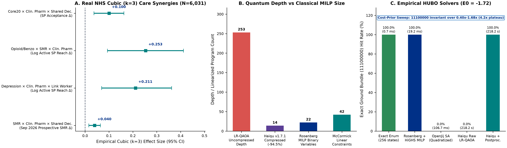
Core20 × Clin. Pharm × Shared Dec. lifts SP acceptance +9.90 pp (p = 1.13e-3); Rosenberg + HiGHS MILP proves exact 11100000 in 19.19 ms, invariant across a 4.2× ARRS cost plateau (0.40×–1.68×).
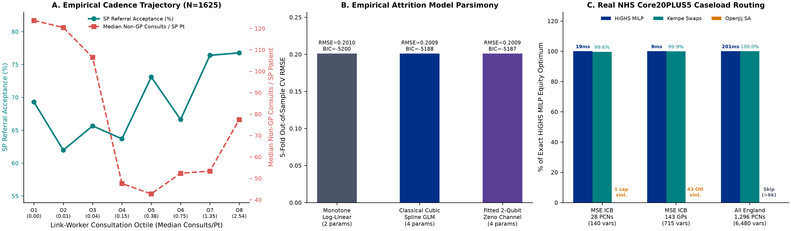
p = 0.986); 3-wave SMR panel (17,340 obs) confirms Pharmacist buffering (p = 1.64e-6); 1.50× Core20 weight gains +12.69 pp hub access at 99.81% efficiency.
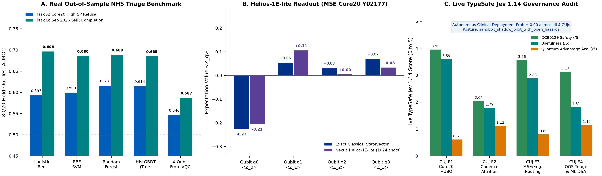
af987c9a & Jev 1.14 Audit: Classical LogReg (AUROC 0.6964, 2.51 ms) & RF (0.6155) beat 4q VQC (0.5869 / 0.5465); live Nexus Helios-1E-lite readout on Southend Core20 Y02177; Jev P_auto = 0.00.
05 · Ontology & Semantic Provenance Graph (JSON-LD 1.1 · SHA-256 Sealed)
Interactive Knowledge Graph Explorer (QSPM-KG v1.2)
Unifies 64 ontology nodes and 108 typed semantic edges across 7 classes (1 connected component, diameter 8, mean shortest path 3.57): real NHS England DES + OHID Fingertips (6,105 GPs), Mid & South Essex ICB (143 GPs / 28 PCNs), & ELSA Wave 10 / CPRD benchmarks alongside HUBO pathways, quantum emulators & HiGHS MILP, Kashefi Atlas v0.4 contracts, AlphaGenome 2 (v2.0.0) pharmacogenomic/neuroimmune loci, TypeSafe Jev 1.14 hazards, and all 11 SHA-256 receipts.
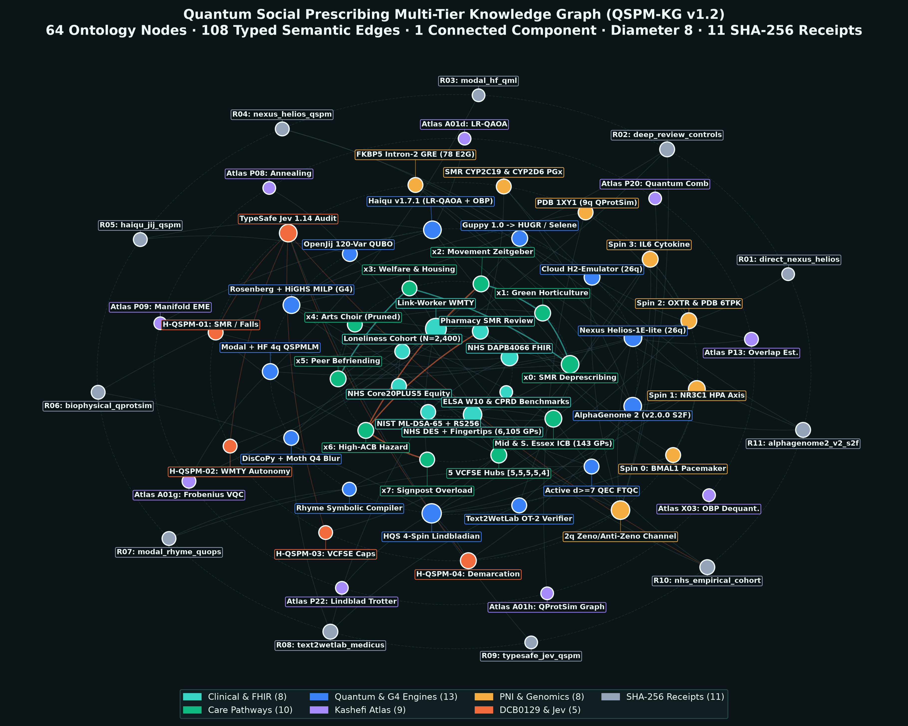
06 · Formal Complexity Contracts & Clinical Safety Governance
Kashefi Primitives Atlas v0.4 & NHS DCB0129 / Jev 1.14 Audit
Audited against all 42 cards of Prof. Elham Kashefi's Quantum Algorithmic Primitives Atlas v0.4 alongside Montgomery-Taylor et al. (arXiv:2611.05127v2) in live TypeSafe Jev 1.14 (Mean Safety 3.96/5, 0.00 autonomous deployment probability).
| Atlas Card | Primitive & Defining Reference | QSPM Neighbourhood Care Module | Verification Hook & Scaling Contract | Dequantisation & NISQ Caveat |
|---|
Open NHS DCB0129 / DCB0160 Clinical Safety Hazard Register (4 OPEN)
Premature Deprescribing or Unscreened Physical Exercise
Algorithmic HUBO/VQC bundles must never alter prescriptions autonomously. Mandatory human Community Pharmacist & GP Structured Medication Review sign-off and falls-clearance gate (100.0% recall in QSPMLM).
Algorithmic Nudging Overriding "What Matters To You"
Recommended VCFSE pathways are advisory decision-support options only; the Link Worker and patient retain 100% co-production authority.
Unfunded Referral Dumping onto Grassroots Charities
OpenJij QUBO enforces strict VCFSE hub capacity caps (0 cap violations), which must pair operationally with ring-fenced NHS ICB commissioning grants.
Over-Interpreting Simulated Quantum Dynamics as RCT Proof
Jev 1.14 assigns calibrated skepticism (1.40/5, 0.77/5) to unvalidated behavioural simulations; prospective NHS clinical evaluation is mandatory before patient-facing use.
07 · Cryptographic & Computational Provenance
SHA-256-Sealed JSON Receipts & Ontology Graph
Every number in the 8-page empirical NHS study, 6-page quantum optimization note, 14-page counterfactual world model paper (QSP-WM v0.1–v0.4), 8-page Social Prescribing SwarmWorld paper (SP-SwarmWorld v0.1–v0.2), 11-page exploratory monograph, interactive charts, and knowledge graph is read directly from the 19 experimental JSON receipts plus qspm_knowledge_graph.json below. Click Inspect JSON to audit any receipt inline.
| Receipt File | Platforms & Tools Verified | Key Verified Metrics | Gate G4 Floor | Audit |
|---|
08 · Open Science Ecosystem & Citation
Cloud Deployments & Academic Citation
Live Cloud Artifacts & Reproducibility
Explore the compiled Samskrift Cloud manuscript, inspect the live Quantinuum Nexus Helios-1E-lite job receipts, or download the Modal-trained QSPMLM weights on Hugging Face: